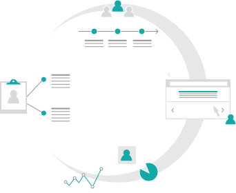

Who I've worked with:

I have a user centered design process:
I've worked in ecommerce and technology sectors and
have a passion for simple and usable interfaces.
I'm looking for a new UX and visual design role and opportunities in the Cambridge and London area.
If your interested in working with me please drop me a line.

My user centered design process is key to producing great products that impresses stakeholders and users. You can read a case study to see how I work, or view some of my recent projects.
In addition to my UX background, I believe in growing of a diverse tech community here in Cambridge. I coordinate the Cambridge codebar Chapter.
codebar is a non-profit initiative that facilitates the growth of a diverse tech community by running regular programming workshops.
Our goal is to enable underrepresented groups to learn programming in a safe and collaborative environment and expand their career opportunities. To achieve this, we run free weekly workshops, regular events and try to create opportunities for our students making technology and coding more accessible.
If you're interesting in signing up as coach or student, please sign up at the codebar website.